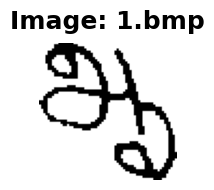
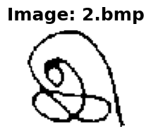
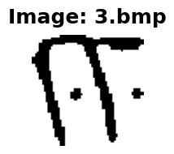
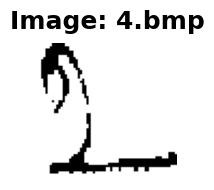
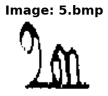
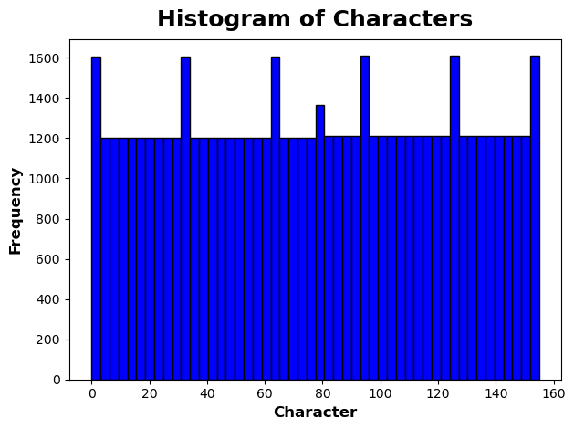
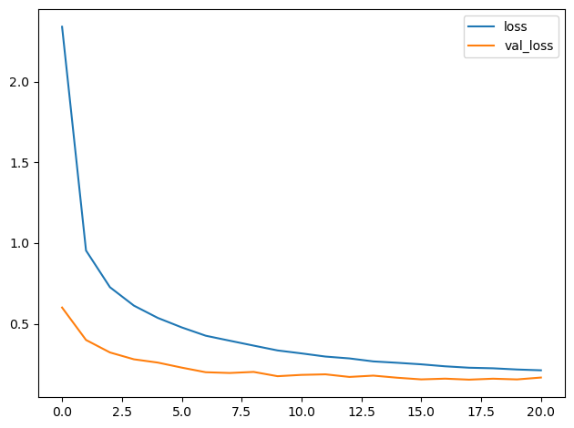
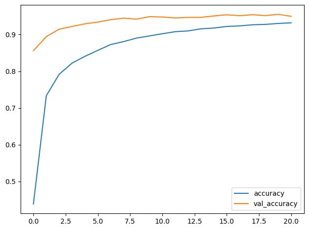

In this notebook, we are going to take a look at trying to use convolutional neural networks in order to try and estimate what character of Tamil is written based on a given input. Let's try and work through that.
import os
import numpy as np
import pandas as pd
import random
import shutil
import warnings
from PIL import Image # image processing
import matplotlib.pyplot as plt
import tensorflow as tf
from tensorflow import keras
from tensorflow.keras import layers
from tensorflow.keras.utils import image_dataset_from_directory # load images from directory
from tensorflow.keras import callbacks # use EarlyStopping
# Reproducability
def set_seed(seed=31415):
np.random.seed(seed)
tf.random.set_seed(seed)
os.environ['PYTHONHASHSEED'] = str(seed)
os.environ['TF_DETERMINISTIC_OPS'] = '1'
set_seed(31415)
# Set Matplotlib defaults
plt.rc('figure', autolayout=True)
plt.rc('axes', labelweight='bold', labelsize='large',
titleweight='bold', titlesize=18, titlepad=10)
plt.rc('image', cmap='magma')
warnings.filterwarnings("ignore") # to clean up output cells/opt/conda/lib/python3.10/site-packages/scipy/__init__.py:146: UserWarning: A NumPy version >=1.16.5 and <1.23.0 is required for this version of SciPy (detected version 1.23.5
warnings.warn(f"A NumPy version >={np_minversion} and <{np_maxversion}"
/opt/conda/lib/python3.10/site-packages/tensorflow_io/python/ops/__init__.py:98: UserWarning: unable to load libtensorflow_io_plugins.so: unable to open file: libtensorflow_io_plugins.so, from paths: ['/opt/conda/lib/python3.10/site-packages/tensorflow_io/python/ops/libtensorflow_io_plugins.so']
caused by: ['/opt/conda/lib/python3.10/site-packages/tensorflow_io/python/ops/libtensorflow_io_plugins.so: undefined symbol: _ZN3tsl6StatusC1EN10tensorflow5error4CodeESt17basic_string_viewIcSt11char_traitsIcEENS_14SourceLocationE']
warnings.warn(f"unable to load libtensorflow_io_plugins.so: {e}")
/opt/conda/lib/python3.10/site-packages/tensorflow_io/python/ops/__init__.py:104: UserWarning: file system plugins are not loaded: unable to open file: libtensorflow_io.so, from paths: ['/opt/conda/lib/python3.10/site-packages/tensorflow_io/python/ops/libtensorflow_io.so']
caused by: ['/opt/conda/lib/python3.10/site-packages/tensorflow_io/python/ops/libtensorflow_io.so: undefined symbol: _ZTVN10tensorflow13GcsFileSystemE']
warnings.warn(f"file system plugins are not loaded: {e}")
Now, let's load the training data from the kaggle input directory.
df_train = pd.read_csv('/kaggle/input/tamil-hwcr/train.csv')
df_test = pd.read_csv('/kaggle/input/tamil-hwcr/test.csv')df_train.info()<class 'pandas.core.frame.DataFrame'>
RangeIndex: 62870 entries, 0 to 62869
Data columns (total 2 columns):
# Column Non-Null Count Dtype
--- ------ -------------- -----
0 ID 62870 non-null object
1 Class Label 62870 non-null int64
dtypes: int64(1), object(1)
memory usage: 982.5+ KB
df_train.head()| ID | Class Label | |
|---|---|---|
| 0 | 1.bmp | 2 |
| 1 | 2.bmp | 3 |
| 2 | 3.bmp | 4 |
| 3 | 4.bmp | 5 |
| 4 | 5.bmp | 6 |
Now, let's take a first look at the data by inspecting the BMP Files given as the input for both dataframes. Then, we'll keep exploring.
# find the size of an image
width, height = Image.open(
'/kaggle/input/tamil-hwcr/Train-Kaggle/Train-Kaggle/1.bmp'
).size
print(f'Width: {width}px, Height: {height}px')Width: 64px, Height: 64px
examples = 5 # modify if desired
for index in range(examples):
image_file = df_train['ID'][index]
image_path = os.path.join(
'/kaggle/input/tamil-hwcr/Train-Kaggle/Train-Kaggle/',
image_file
)
img = Image.open(image_path)
plt.figure(figsize=(2,2))
plt.imshow(img)
plt.title(f'Image: {image_file}')
plt.axis('off')
plt.show()




label = 'Class Label'# how many class labels are we classifing? 156 different characters
len(df_train[label].unique())156df_train[label].describe()count 62870.000000
mean 77.601861
std 44.977283
min 0.000000
25% 39.000000
50% 78.000000
75% 116.000000
max 155.000000
Name: Class Label, dtype: float64# what is the historgram of the Class Lebels?
plt.hist(df_train[label], bins=50, color='blue', edgecolor='black')
# Add labels and title
plt.xlabel('Character')
plt.ylabel('Frequency')
plt.title('Histogram of Characters')Text(0.5, 1.0, 'Histogram of Characters')
From the following histogram, we can see that the class distribution is about as balanced as it could be. The few outliers could most likely be vowels or other highly used characters in the Tamil language.
Because we are dealing with images as the input, we need to get the
filenames from the dataframe df_train, or look in the
/kaggle/input/tamil-hwcr/Train-Kaggle/Train-Kaggle/
directory for the training files, and then split those pictures into
training and validation data, then pass it in along with the labels from
the dataframe into the model to train. In order to do that, we will use
tensorflow's image_dataset_from_directory module. Check out
the following [link](https://www.tensorflow.org/tutorials/images/classification#:~:text=train_ds%20%3D-,tf.keras.utils.image_dataset_from_directory,-(%0A%C2%A0%20data_dir%2C)
to understand how to use this module better.
image_train_directory = '/kaggle/input/tamil-hwcr/Train-Kaggle/Train-Kaggle/'
image_test_directory = '/kaggle/input/tamil-hwcr/Test-Kaggle/Test-Kaggle/'In order to construct the correct matchings of Class Label to file,
we need to order the dataframe by alphanumeric order of the
ID column. Then, we can match the correct labels to the
data.
df_train = df_train.sort_values(by='ID')
df_test = df_test.sort_values(by='ID')# 'Class Label' output values for training set
train_labels = df_train[label].tolist()
# create the training and validation subsets
train_ds, val_ds = image_dataset_from_directory(
image_train_directory,
labels=train_labels,
label_mode='int',
validation_split=0.2, # 20% for validation
subset='both', # return tuple of training and validation
seed=123, # random seed for no overlap of training and validation
image_size=(64,64), # corresponding image size
batch_size=32
)
test_ds = image_dataset_from_directory(
image_test_directory,
labels=None,
label_mode=None,
image_size=(64,64)
)Found 62870 files belonging to 156 classes.
Using 50296 files for training.
Using 12574 files for validation.
Found 28080 files belonging to 1 classes.
Because we are using images, we need to use buffered prefetching so that we don't continuously try to reload the images. This way, when running consequentive epochs, we will have the images stored in a cache. This is particularly helpful for a large dataset like we have here. Check out this link for example implementation on the tensorflow website.
AUTOTUNE = tf.data.AUTOTUNE
train_ds = train_ds.cache().shuffle(1000).prefetch(buffer_size=AUTOTUNE)
val_ds = val_ds.cache().prefetch(buffer_size=AUTOTUNE)For the following model, it is going to be quite simple, starting with a little preprocessing which will tilt each image slightly to adjust for angles in writing, continuing with a few blocks of convolution -> relu -> pooling, and ending with some dense layers as the classifier head.
In the conolutional blocks, we are going to double our
filters value over subsequent layers and set a small
kernel_size parameter. The filters argument
may have to be tuned, however, the kernel_size should
likely be small in order to differentiate between very small differences
between characters. We will gradually decrease the kernel size as we
progress through the network.
The reason for doubling the filters value is to perform the following, among more benefits:
model = keras.Sequential([
# rescale the image to one color channel, but still include input shape with 3 color channel
layers.Rescaling(1./255, input_shape=(64,64,3)),
# Convolutional Block
layers.Conv2D(filters=16,
kernel_size=3,
activation='relu',
padding='same'),
layers.MaxPool2D(),
layers.Dropout(0.25),
# Convolutional Block #2
layers.Conv2D(filters=32,
kernel_size=2,
activation='relu',
padding='same'),
layers.MaxPool2D(),
layers.Dropout(0.25),
# Convolutional Block #3
layers.Conv2D(filters=64,
kernel_size=2,
activation='relu',
padding='same'),
layers.MaxPool2D(),
layers.Dropout(0.25),
# Classifier Head
layers.Flatten(),
layers.Dense(units=256, activation='relu'),
layers.Dropout(0.50),
# end layer with as many units as possible classes
layers.Dense(units=156, activation='softmax')
])
model.summary()Model: "sequential"
_________________________________________________________________
Layer (type) Output Shape Param #
=================================================================
rescaling (Rescaling) (None, 64, 64, 3) 0
conv2d (Conv2D) (None, 64, 64, 16) 448
max_pooling2d (MaxPooling2D (None, 32, 32, 16) 0
)
dropout (Dropout) (None, 32, 32, 16) 0
conv2d_1 (Conv2D) (None, 32, 32, 32) 2080
max_pooling2d_1 (MaxPooling (None, 16, 16, 32) 0
2D)
dropout_1 (Dropout) (None, 16, 16, 32) 0
conv2d_2 (Conv2D) (None, 16, 16, 64) 8256
max_pooling2d_2 (MaxPooling (None, 8, 8, 64) 0
2D)
dropout_2 (Dropout) (None, 8, 8, 64) 0
flatten (Flatten) (None, 4096) 0
dense (Dense) (None, 256) 1048832
dropout_3 (Dropout) (None, 256) 0
dense_1 (Dense) (None, 156) 40092
=================================================================
Total params: 1,099,708
Trainable params: 1,099,708
Non-trainable params: 0
_________________________________________________________________
We are going to use the adam optimizer, along with the
categorical_crossentopy loss function for classifying
between many different classes, and using a simple accuracy metric.
model.compile(optimizer='adam',
loss=tf.keras.losses.SparseCategoricalCrossentropy(from_logits=True),
metrics=['accuracy'])Monitoring the validation loss, we want to stop the training once after 3 epochs have ran, the validation loss has not decreased by at least 0.001. Once this happens, restore the best weights that were calculated from the network.
early_stopping = callbacks.EarlyStopping(
monitor='val_loss',
min_delta=0.001,
patience=3,
restore_best_weights=True
)Execute the model on the image generators created for the training and validation data.
history = model.fit(train_ds,
validation_data=val_ds,
epochs=100,
verbose=1,
callbacks=[early_stopping])Epoch 1/100
2023-08-28 18:28:16.958593: E tensorflow/core/grappler/optimizers/meta_optimizer.cc:954] layout failed: INVALID_ARGUMENT: Size of values 0 does not match size of permutation 4 @ fanin shape insequential/dropout/dropout/SelectV2-2-TransposeNHWCToNCHW-LayoutOptimizer
1572/1572 [==============================] - 182s 57ms/step - loss: 2.3398 - accuracy: 0.4384 - val_loss: 0.6012 - val_accuracy: 0.8557
Epoch 2/100
1572/1572 [==============================] - 13s 8ms/step - loss: 0.9544 - accuracy: 0.7332 - val_loss: 0.4004 - val_accuracy: 0.8941
Epoch 3/100
1572/1572 [==============================] - 13s 8ms/step - loss: 0.7270 - accuracy: 0.7917 - val_loss: 0.3231 - val_accuracy: 0.9144
Epoch 4/100
1572/1572 [==============================] - 13s 8ms/step - loss: 0.6130 - accuracy: 0.8221 - val_loss: 0.2807 - val_accuracy: 0.9218
Epoch 5/100
1572/1572 [==============================] - 13s 8ms/step - loss: 0.5368 - accuracy: 0.8406 - val_loss: 0.2603 - val_accuracy: 0.9291
Epoch 6/100
1572/1572 [==============================] - 13s 8ms/step - loss: 0.4781 - accuracy: 0.8568 - val_loss: 0.2291 - val_accuracy: 0.9338
Epoch 7/100
1572/1572 [==============================] - 13s 8ms/step - loss: 0.4267 - accuracy: 0.8727 - val_loss: 0.2007 - val_accuracy: 0.9403
Epoch 8/100
1572/1572 [==============================] - 13s 8ms/step - loss: 0.3959 - accuracy: 0.8806 - val_loss: 0.1960 - val_accuracy: 0.9444
Epoch 9/100
1572/1572 [==============================] - 13s 8ms/step - loss: 0.3655 - accuracy: 0.8902 - val_loss: 0.2026 - val_accuracy: 0.9418
Epoch 10/100
1572/1572 [==============================] - 13s 8ms/step - loss: 0.3356 - accuracy: 0.8960 - val_loss: 0.1761 - val_accuracy: 0.9485
Epoch 11/100
1572/1572 [==============================] - 13s 8ms/step - loss: 0.3173 - accuracy: 0.9020 - val_loss: 0.1843 - val_accuracy: 0.9476
Epoch 12/100
1572/1572 [==============================] - 13s 8ms/step - loss: 0.2977 - accuracy: 0.9076 - val_loss: 0.1877 - val_accuracy: 0.9450
Epoch 13/100
1572/1572 [==============================] - 13s 8ms/step - loss: 0.2862 - accuracy: 0.9098 - val_loss: 0.1715 - val_accuracy: 0.9466
Epoch 14/100
1572/1572 [==============================] - 13s 8ms/step - loss: 0.2677 - accuracy: 0.9154 - val_loss: 0.1797 - val_accuracy: 0.9466
Epoch 15/100
1572/1572 [==============================] - 13s 8ms/step - loss: 0.2591 - accuracy: 0.9176 - val_loss: 0.1666 - val_accuracy: 0.9505
Epoch 16/100
1572/1572 [==============================] - 13s 8ms/step - loss: 0.2496 - accuracy: 0.9219 - val_loss: 0.1563 - val_accuracy: 0.9536
Epoch 17/100
1572/1572 [==============================] - 13s 8ms/step - loss: 0.2373 - accuracy: 0.9234 - val_loss: 0.1609 - val_accuracy: 0.9512
Epoch 18/100
1572/1572 [==============================] - 13s 8ms/step - loss: 0.2286 - accuracy: 0.9265 - val_loss: 0.1547 - val_accuracy: 0.9538
Epoch 19/100
1572/1572 [==============================] - 13s 8ms/step - loss: 0.2251 - accuracy: 0.9275 - val_loss: 0.1606 - val_accuracy: 0.9515
Epoch 20/100
1572/1572 [==============================] - 13s 8ms/step - loss: 0.2176 - accuracy: 0.9300 - val_loss: 0.1562 - val_accuracy: 0.9547
Epoch 21/100
1572/1572 [==============================] - 13s 8ms/step - loss: 0.2126 - accuracy: 0.9317 - val_loss: 0.1678 - val_accuracy: 0.9495
Let's take an in-depth look at the loss and accuracy of the performance of the neural network:
history_frame = pd.DataFrame(history.history)
history_frame.loc[:, ['loss', 'val_loss']].plot()
history_frame.loc[:, ['accuracy', 'val_accuracy']].plot()<Axes: >

Now let's use our Dataset object for the testing data to try and make some predictions.
predictions = model.predict(test_ds)878/878 [==============================] - 72s 81ms/step
predictionsarray([[4.6309733e-17, 8.2076741e-12, 1.7609805e-14, ..., 5.0773141e-15,
1.5125445e-19, 4.8730367e-11],
[1.1467371e-15, 7.5865895e-15, 1.0046218e-16, ..., 7.7496908e-15,
2.2884797e-12, 3.2032094e-16],
[3.4791068e-17, 4.9271361e-21, 1.4012276e-23, ..., 2.0323141e-15,
1.0897205e-17, 8.3412812e-13],
...,
[1.0664964e-14, 7.2284333e-13, 3.4676642e-17, ..., 9.7851683e-12,
9.3390821e-24, 1.3938878e-09],
[1.0856621e-21, 4.2370267e-09, 1.7320953e-14, ..., 3.4697714e-15,
8.8262541e-14, 3.6278539e-10],
[5.1718277e-18, 9.0966262e-12, 2.5385682e-14, ..., 8.6640036e-15,
1.8253782e-14, 2.1614521e-14]], dtype=float32)Since the result is a 2D array, we need to map each list to the index of the max element of the corresponding array. Kind of like a manual softmax at the end of everything.
softmax_predictions = np.argmax(predictions, axis=1)Finally, add the softmax_predictions list as a new
column in the sorted testing dataframe. Also make the
Class Label column listed as string values.
df_test['Class Label'] = softmax_predictions
df_test['Class Label'] = df_test['Class Label'].astype(str)df_test| ID | Class Label | |
|---|---|---|
| 0 | 1.bmp | 46 |
| 9 | 10.bmp | 98 |
| 99 | 100.bmp | 75 |
| 999 | 1000.bmp | 61 |
| 9999 | 10000.bmp | 52 |
| ... | ... | ... |
| 9994 | 9995.bmp | 133 |
| 9995 | 9996.bmp | 40 |
| 9996 | 9997.bmp | 94 |
| 9997 | 9998.bmp | 36 |
| 9998 | 9999.bmp | 52 |
28080 rows × 2 columns
df_test.to_csv('submission.csv', index=False)
print('submission successfully saved')submission successfully saved